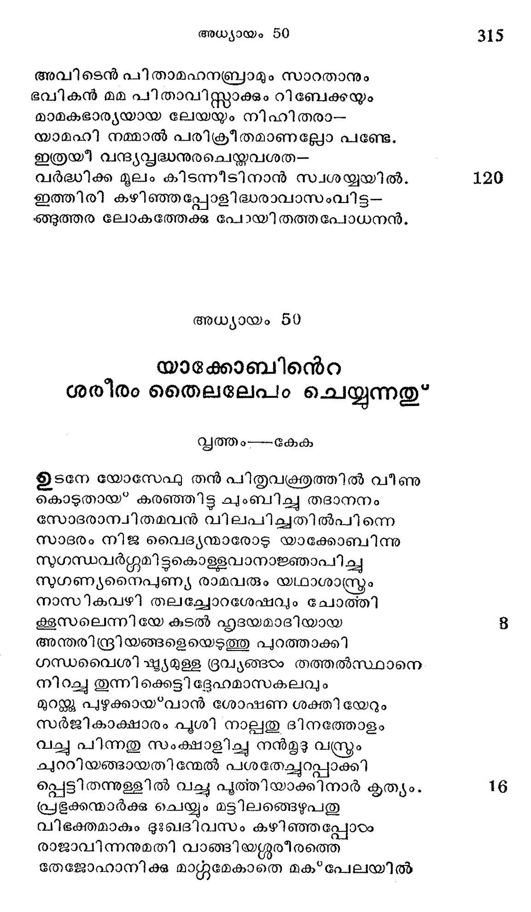

അധ്യായം 49
പുത്രന്മാരേക്കുറിച്ചുള്ള ഭവിഷ്യല് കഥനം
മൃതിയാം മഹോദധി തരിപ്പാനുള്ള പോതം
നിതരാം വെടുപ്പോടു സന്നദ്ധമാക്കി സൃദ്ധന്
പ്രപഞ്ചത്തിന്നു യാത്ര ചൊല്ലവാന് തുടങ്ങവേ
സ്വപുത്രന്മാര്ക്കു വരും ഭവിഷ്യല് ഫലങ്ങളെ
അവരോടോതുവാനായ്* ഭാവിച്ചു പരമേശ--
ഭവികാത്മാവിന് ദിവ്യപ്രേരണാബലത്താലെ.
യാക്കോബു ചൊന്നീവണ്ണം കൂടി വന്നീടിനെന്െറ-
യയംക്കുരുന്നുകളായ മക്കളേ! മദന്തികോ
എന്നുടെ വാക്കു നിങ്ങരം ശ്രദ്ധിപ്പിന് ഭാവികാല-
ത്തിന്നതു നിങ്ങഠോക്കുണ്ടാമെന്നു ഞാന് ചൊല്ലീടുവന്.
രൂബനേ! മാമകാദ്ൃയ ജാതനാം നീ യെന്നുടെ
ഭാവുകവീര്യ മോജസ്റ്റിന്നുടെ വൈശിഷ്യയം താന്.
വെള്ളംപോല് തുളമ്പന്ന ചപലന് നീ, യെന്നാളം--
വെള്ളയിലരള്ുന്നേന് വല്ഭനാകയില്ല.
ത്വല്പിതൃശയനീയസ്യോപരി കരേറി നീ
തല്ലമായതു മലീമസമായ*ത്തീത്തായല്ലോ.
ശിമയോന്ലേവിയെന്ന് വീരന്മാര് സഹോദരര്
ക്ഷമയില്ലായ*മന്്കുള്ളോരായയധമവര് ഖഡ*ഗം
മന്മനഃപ്രഭാവമേ: പോകൊല്ല തന്മന്്രത്തില്.
മന്മനഃപ്രദീപമേ! ചേരൊല്ല തല്ഗോഫഷ്ടഷിയില്
കാരണ മാക്കോപിഷ്കര് കൊന്നിതു പുരുഷരേ
ഘോരമാം ശാഠ്യംപൂണ്ടു വധിച്ചാരുര്പ്പീന്ദ്രനേ.
ജ്ലിതമായള്ളൊരി ക്രോധവു മസഹ്യമാം
വലിയ കോപം താനും ശപ്പമാകട്ടെ മേലാല്.
യാക്കോബിൻ കുലത്തില്നിന്നകററുമവരെ ഞാന്
ധിക്കൃ തരവരെന്നാല് വ്യാകീര്ണ്ണരാകും നൂനം.
യഹൂഭേ! ഭവല്ദ്രാതൃഗണത്താല് സ്കൃത്യന് ഭവാന്.
മഹാരി ഗണത്തിന്നു ചെയ്യും നീ ഗളഹസ്മം.
ത്വല്ലിതു സന്താനങ്ങഠം നിന്നതി പ്രതാപത്താല്
ത്വല*പുരോ ഭവി വീണു നമസ്യ ചെയ്യും ധ്രുവം.
ആരുതാന് യഹഛ്ൂദാഖ്യന് ബാലകേസരിയല്ലോ
ധീരനായിരപിടിച്ചേറിയെന്മകനേ! നീ
പതുങ്ങി സിംഹീസി ംഹസമാനം കിടക്കുന്ന
മതംഗ പരിപന്ഥിന്! നിന്നെയാരുത്ഥാപിക്കും ?
യ/ഥാത്ഥ സ്വാമിയായോന് വന്നീടുംവരെല്ചെങ്കോല്
യഛൂദാചരണങ്ങംം വിട്ടമാറുകയില്ല
സമസ്മജാതികളുമവനന്െറ മാഹാത്മ്യത്തെ
സമീക്ഷ്യ വിധേയരാ മിവനാല് കൃഷ്യമാകും
അര്ഭ്ദനപടുക്കളായ* മര്ദ്ദനമാര്ന്നു കാററില്
കര്ട്ദനം ചെയ്തു ജനഹാര്ട്ദത്തെ വളര്ത്തുന്ന 40
ദുര്ഭൂശാ രഹിതമാമുദ്യാന മൂദ്വീകകടം
ഗര്ഭഭബന്ധക്ഷമ നിലയില് ശോഭിക്കുന്നു.
ശോണവണ്ണമാം ദ്രാക്ഷാരസത്തിന്കണം പററി
ച്ചേണിയന്നിലങഞ്ങുന്നു തദ്വസ്ത്രമുദ്വേലമായ്.
അന്തിമേഘംപോല് കാൺമുവീഞ്ഞിനാല് തന്നേത്രങ്ങഠം
ഭന്തങ്ടടം ക്ഷീരപാനശുഭ്രമായ*ത്തിളങ്ങുന്നു.
നീലപൃത്കരദേശത്തണ്ഡജങ്ങളെപ്പോലെ
നീലപശ്ണകരമദ്ധ്യേ ചരിക്കും പോതങ്ങളാല്
നിയതം ശോഭിക്കുന്ന സമുദ്രതീരത്തിങ്കല്
നിവസിച്ചീടും സീദോന്വരെയും സെബുലാഖ്യന്.
അസ്ഥി ദാര്ഡ്യമുള്ള ഖരമാണിസാഖരന്
സ്വസ്ഥനായ് തൊഴുത്തുകരംക്കിടയി ലവന് പാര്പ്പൂ
ദേശത്തിന് നന്മകണ്ടു വിശ്രമിക്കയാലന്ൃയ
ഭാസനായ്*ഭവിച്ചയ്യോ ചുമടു പേറുംതോളില്.
ദാനന്യ ഗോത്രങ്ങളെപ്പോലവേ താഴാതെ തന്
മനവക്കൊരു ധമ്മാദ്ധ്യക്ഷനായ* ഭവിച്ചീടും. 6
പന്ഥാവിലിവന് ഘോര സര്പ്പുമായ*വസിക്കയാല്
ഗന്താവിന് കുതിരതന് കുതികാല് ദംശിചിടും
തല്ഫലമായിട്ടര്വ്യാം വീണിടും തദാരൂഡന്
നല്ലെഴും നാഥാ! നീനന്െറ രക്ഷന്ക്കായ*ക്കാത്തീടുന്നേന്.
ഗാദിനന്െറ കഥ പരമാത്ഭുതമൊരു സൈന്യം
ബാധിക്കുമവനെയെന്നാകിലു മന്ത്യത്തിങജ്കല്
വിജയക്കൊടി നാട്ടമായലവന് ശതര്രുക്കളേ
രുജയോടോടിച്ചീട മഗ്ഗുഷ്യതേജസ്വിയായ്. 64
മിഷ്ടവും സംപുഷ്ടയവമാകിയ രാജഭക്ത്യാ
തുഷ്ടനായ* നിജദിഷ്യയാപനം ചെയ്യുമാശേര്.
കൃംഗോപശ്യംഗമേലും ശിരസ്ത് പൊക്കിക്കാട്ടി
ഹുങ്കൊടു നടക്കുന്നൊടദരണമെന്നതുപോലെ
സ്വച്ഛുന്ദംചരിച്ചതി രസി കോക്തികടം ചൊല്ലി-
പ്പിചചയില് കാലം പോക്കും നപ്നാലി! സുപ്തമാശയന്.
യോസേഫു പ്രണാളികടംക്കരികേ ഫലം നല്കും
ഭാസരവ്വക്ഷം തന്നെ, തച്ഛാഖ പ്രാചീരത്തില് 7
പടര്ന്നു വിലസുന്നു, വില്ലാളിഗണം പാരം
തുടര്ന്നുപൊരുകയാല് വിഷമിച്ചെന്നാകിലും
തദ്ധ൯സ്സതി ഭാര്ഡ്യമിയന്നു നിന്നതെന്ന്യേ
തദ്ധസ്മം യാക്കോബി നന്െറ നാഥനാം സല്യേശനാൽ
ബലവത്തായിത്തീര്ന്നു; യിസ്രേലിന് മഹാഗ്മമാം
മലമററുള്ള നേതൃനാമത്താല് തന്നെ നൂനം.
നിന്പിതൃ ടദൈവമാകും സവ്യശക്തിമാന് നിന്നി--
ലന്പിയന്നനുകൂലിച്ചേകിടും സാഹായ്യം തേ.
ആകാശമതില്നിന്നു പൊഴിയുമാശിസ്ത്കാലും
ആഴിയില്നിന്നുള്ളതാ മനര്ഘസസമ്പത്താലും
സ്മുനഗര്ഭാദിമൂല മുണ്ടാകും ഭൂതിയിലും
അനഘനനുഗ്രഹിച്ചീടട്ടെ നിന്നേ യെന്നും.
നിന് പിതുരാശിസ്ത്ുകടം മാമകജനകന്മാ-
രന്പിയന്നരുളി നോരാശിസ്റ്മായി ച്ചേര്ന്നു
ശാശ്വതഗിരികളില് സീകാന്തം വളര്ന്നുവ--
ന്നാസ്ഥിതമായി സ്റ്റോദര്യോല്ക്കരപ്രഭവാകും
യോസേഫിന് തലയ്ക്കു മേലൊഴുകും, ഹെമ്മോനില്നി -
നാസമന്തതോ പായും തുഷാരസ്ര് തിപോലെ.
ബന്യമീന് കഠോരമാം തന്നുടെ ദംഷ്കൊണ്ടു
വന്യഗാര്ഹികജയ്തുവ്വന്ദത്തെ നിരായാസം
രണ്ടു സന്ധ്യകളിലും പിടിച്ചു കീറിത്തിന്നും
കണ്ടകകലകാലനാകിയ ചെന്നായത്രേ.
അത്ഥവത്തുകളായിക്കവിതാമകരന്ദം
നിമ്റളിച്ചൊഴുകുന്ന പദഥുംഭനത്തോടും
ഭവിഷ്ൃച്രിത്രത്തേ ദീര്ഘടദര്ശന ശക്ത്യാ
വിവര്ത്തിച്ചറിഞ്ഞു തന് മക്കളേ നിജേച്ഛപോല്
ആശിഷാപരിഷേചിപ്പാനുള്ള മനോദയം
ഈശിതാവിനന്െറ ചിത്തം ഗ്രഹിച്ചു നിരസിച്ചും
ശോഭനതരമായ ഭാവിയാൽ ചിന്നേത്രങ്ങഠം
ശീഭരം വികസിച്ചു മനിഷ്ടവ്ൃത്താന്തത്തില്
കണ്ണുനീര തുളമ്പിയും, ചുണ്ടുകഠം വിറയാര്ന്നും
വിണ്ണവര് നാഥനോട സങ്കടമറിയില്ചും,
ശ്രോതാക്കളായി നില്ക്കും സ്വജനങ്ങളേയെലും
സ്ത്രീതഭക്ത്യാഭരാദി വികാരാല് സ്മംഭിപ്പിച്ചും
ഭവിഷ്യല് കഥയേവം കഥിച്ചശേഷം തന്െറ
സുവക്രതും വിടര്ത്തിത്തന്നന്ത്യ ശാസനമേവം
ചൊന്നിതു മരിക്കുന്നേ നീജിപ്ലിലെന്നാല മീ-
യന നാടതിന്നിന്നു മാമകകളേബരം
കൊണ്ടുപോകണം നിങ്ങടം വാഭ്ദത്തദേശത്തേക്കു
രണ്ടഭിപ്രായമതിനുണ്ടാക വേണ്ടാതെല്ലം
അക്കനാന് നാട്ടില് മ്രമസ്ത്കരികില് നമുക്കുള്ള
മക*പലാ ഗുഹ തന്നില് സംസ്കരിക്കുവിനെന്നേ
അവിടെന് പിതാമഹനബ്രാമും സാറതാനും
ഭവികന് മമ പിതാവിസ്റ്റാക്കും റിബേക്കയ്ം
മാമകഭാര്യയായ ലേയയും നിഹിതരാ-
യാമഹി നമ്മാല് പരിക്രീതമാണല്ലോ പണ്ടേ.
ഇത്രയീ വന്ദ്ൃത്ൃദ്ധനുരചെയ്തവശത--
വര്ദ്ധിക്ക മൂലം കിടന്നീടിനാന് സ്വശയ്യയില്.
ഇത്തിരി കഴിഞ്ഞപ്പോളിഭദ്ധരാവാസംവിട്ട--
ങ്ങുത്തര ലോകത്തേക്കു പോയി തത്തപോധനന്.
